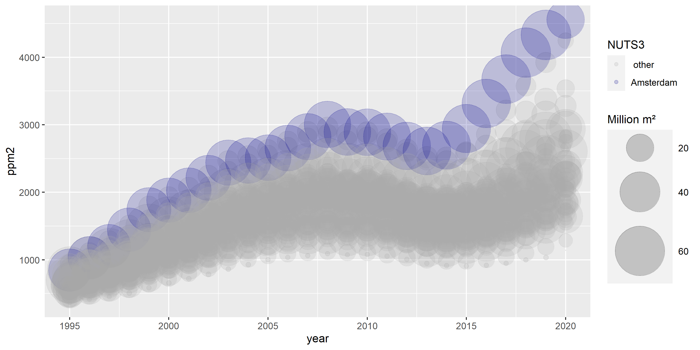
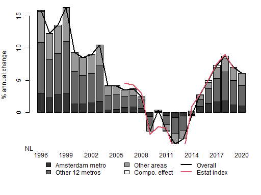
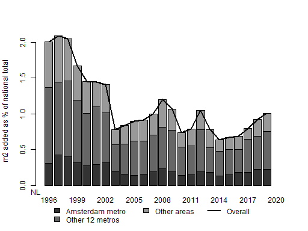
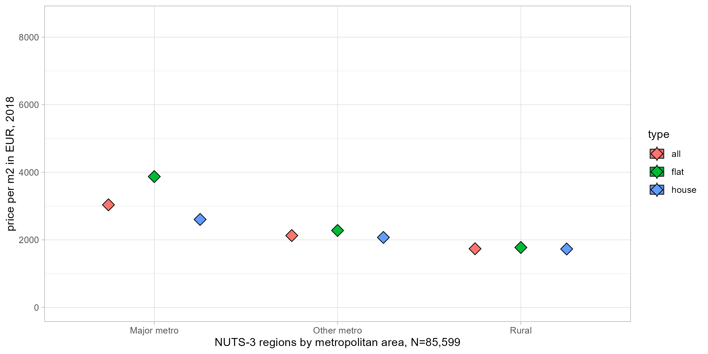

Metadata for NL
Available data
| Code | Start year | End year | NUTS-3 regions | Flat / houses | Latest value |
|---|---|---|---|---|---|
| dwellings | 1981 | 2019 | 40 | 1 | 7 891 k |
| dwl_primary | 2011 | 2019 | 40 | 0 | 7 547 k |
| gdp | 1990 | 2019 | 40 | 0 | 806 520 mn |
| hhincgross_pp | 1990 | 2019 | 40 | 0 | 22 961 |
| hhincnet_pp | 1990 | 2019 | 40 | 0 | 21 175 |
| m2perdwl | 1987 | 2019 | 40 | 1 | 120 |
| m2perperson | 1990 | 2019 | 40 | 0 | 54 |
| nbscrapes | 2019 | 2019 | 40 | 1 | 85 599 |
| p2inc | 1995 | 2019 | 40 | 1 | 10 |
| pop | 1990 | 2021 | 40 | 0 | 17 496 k |
| pop2dwl | 1990 | 2019 | 40 | 0 | 22 |
| ppm2 | 1995 | 2020 | 40 | 1 | 2 450 |
| ppm2_offer | 2009 | 2020 | 40 | 1 | 3 058 |
| rooms | 2001 | 2019 | 40 | 0 | 33 558 k |
| spread | 2009 | 2020 | 40 | 1 | 25 |
| totalm2 | 1987 | 2019 | 40 | 1 | 942 966 k |
| totalval | 1987 | 2020 | 40 | 1 | 2 178 bn |
Start and end year denote time range for which NUTS-3 data is available. NUTS-e3 regions denotes the number of NUTS-3 regions for which data is available. flats/houses: If indicator = 1 then this data is avaialable for the subset of apartments and houses. Latest value: shows the last available data for the national aggregate.
Results overview
Prices over time

Each bubble denotes a NUTS-3 region. Blue colour indicates the capital NUTS-3 region.
Contribution to overall price evolution

Each bar denotes the contribution from a specific group of regions to annual house price growth for the national aggregate, weighted by their residential square metres from the previous year.Capital/top metros denotes any NUTS-3 regions of which more than half belongs to the largest metropolitan areas (that together cover more than 15 percent of the population). Other metros denotes the rest of NUTS-3 regions which belong to metropolitan areas. For reference, the red line indicates the annual change of the Eurostat house price index for existing dwellings.
Residential square metre growth, regional contribution

Each bar denotes the contribution from a specific group of regions to annual growth of residential useful square metres for the national aggregate.
Scraped prices per square metre, compared to stock-weighted average

Boxplots denote distribution of the offer price per m2 for scraped listings, within regions that belong to three types of metropolitan area. Box denote 25% and 75% quantiles, whiskers correpond to 1.5 the inter-quartile range. Diamonds indicate the headline (stock-weighted) average price for the same period, i.e. the price from the main database used in the bubble chart above.
Sources and definitions
Headline price data sources for NL
Prices per m2 attribtue the official appraisal value ('WOZ waarde') by municipality, year and type, for 1995-2019. This is done by aggreageting the WOZ by type, year and muncipality, weighted by the munipalities useful flor area by tyope and year. For pre 2007 data, price levels are extended backwards using the change of the average WOZ waarde by NUTS-3 region.
Offer price data sources for NL
Aggregate price per square metre from huizenzoeker.nl. Microdata is available from funda.nl (85k entries for 2018) but has not been used for agg. stats.
Building stock data sources for NL
The number of dwellings per type, and their surface are taken directly from official annual building census data for municipalities 2011-2019 (CBS 83704NED).
For pre-2011 data, archived building stocks data per NUTS3 region are used to extend the the number of dwellings per type backwards to 1988.
Definition of house v apartment for NL
house is defined as by CBS, which broadly corresponds to dwellings within a building that contains 1 or 2 dwellings from census data. Converse, flat denotes apartments as defined by CBS, including collective licving quarters and unspecified dwellings.
Definition and data sources for square metres for NL
For data past 2011, square metres are computed from CBS information on dwellings by type and 8 size classes. Square metres for earlier years use 2012 information on average square metres by construction year, type, and province, in order to project the average square metre size per dwelling type backward for each NUTS3 regions, based on available anual data on the numebr of dwellings.
Metadata per country:
BE BG CZ DK DE EE IE GR ES FR HR IT CY LV LT LU HU MT NL AT PL PT RO SI SK FI SE